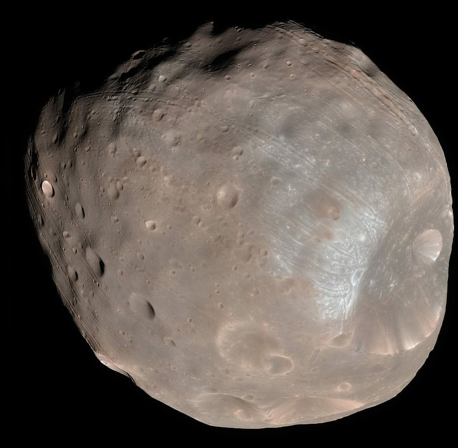

Marte
Marte es el cuarto planeta en orden de distancia al Sol y el segundo más pequeño del sistema solar, después de Mercurio. Recibió su nombre en homenaje al dios de la guerra de la mitología romana (Ares en la mitología griega), y también es conocido como «el planeta rojo» debido a la apariencia rojiza que le confiere el óxido de hierro predominante en su superficie. Marte es el planeta interior más alejado del Sol. Es un planeta telúrico con una atmósfera delgada de dióxido de carbono, y tiene dos satélites pequeños y de forma irregular, Fobos y Deimos (hijos del dios griego), que podrían ser asteroides capturados similares al asteroide troyano (5261) Eureka. Sus características superficiales recuerdan tanto a los cráteres de la Luna como a los valles, desiertos y casquetes polares de la Tierra. |

FobosFobos es el más grande de los dos satélites de Marte y el más cercano al planeta, siendo Deimos el otro satélite. Ambos fueron descubiertos por el astrónomo estadounidense Asaph Hall el 18 de agosto de 1877. 
DeimosDeimos es el más pequeño y externo de los dos satélites de Marte y uno de los satélites más pequeños que han recibido nombre, llamado así por Deimos, un personaje de la mitología griega. |